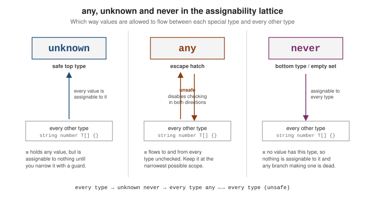

Type Assertions and Modifiers
|
This content was generated with the assistance of AI and should be verified against the official documentation before being relied on in production. |
Assertions and modifiers tell the compiler something it cannot infer on its own, or ask it to check a value without changing the type it infers. They sit on top of the inference rules in The Type System and the control-flow narrowing in Unions and Narrowing; reach for them only when inference genuinely falls short.
The as assertion
An as assertion changes the static type the compiler uses for an expression. It emits no runtime code and performs no check — if you are wrong, the failure surfaces later.
const el = document.getElementById("main") as HTMLCanvasElement;
const ctx = el.getContext("2d"); // ok: el is treated as HTMLCanvasElementAssertions cannot lie too much
An assertion may only move between related types — one must be assignable to the other, or they must share enough structure. A nonsense assertion is rejected outright:
const n = 42 as string;
// ~~~~~~~~~~~~~~
// Conversion of type 'number' to type 'string' may be a mistake because
// neither type sufficiently overlaps with the other.The Type Assertions handbook section describes this as the rule that an assertion may only add or remove a "relatively specific" slice of a type.
The two-step as unknown as T
When you must cross genuinely unrelated types, route through unknown — assignable from anything, and (via the second assertion) to anything:
const wire = '{"id":1}' as unknown as { id: number };Requiring two assertions is a deliberate speed bump: it makes the unsafe step obvious in review. Prefer a real parse-and-validate step instead.
Asserting the type of a caught error
Under useUnknownInCatchVariables (on with strict), the binding in catch (e) has type unknown. Narrow it — do not blind-cast it:
try {
risky();
} catch (e) {
if (e instanceof Error) {
console.error(e.message); // narrowed, safe
} else {
console.error(String(e));
}
}Non-null and definite-assignment assertions
The postfix ! (non-null assertion) removes null and undefined from an expression’s type, with no runtime check:
function firstChar(s?: string) {
return s!.charAt(0); // asserting s is defined here
}The form on a declaration, !: (definite-assignment assertion), states that a field or variable is assigned before use even though the compiler cannot prove it — common with dependency injection or test setup:
class Widget {
private service!: DataService; // set in an init hook, not the constructor
init(s: DataService) { this.service = s; }
}
let config!: Config;
setup(); // assigns config
config.load(); // no "used before being assigned" errorBoth are unchecked promises. If you can restructure so the value is provably present — a constructor parameter, an early return — do that instead.
Assertion functions
An assertion function narrows its argument for the rest of the calling scope by throwing when a condition fails. Its return annotation is asserts x is T, or the bare asserts condition form:
function assert(condition: unknown, msg?: string): asserts condition {
if (!condition) throw new Error(msg);
}
function assertString(v: unknown): asserts v is string {
if (typeof v !== "string") throw new Error("not a string");
}
function use(v: unknown) {
assertString(v);
v.toUpperCase(); // v is string from here on
}See Assertion Functions for the signature rules — an explicit return-type annotation is mandatory, and the annotation is lost on a function expression assigned without one.
const assertions
as const asserts an expression to its narrowest, deeply immutable form:
-
primitive literals keep their literal type (
"GET", notstring); -
every property becomes
readonly, recursively; -
array literals become
readonlytuples rather thanT[]— tuple freezing.
const method = "GET" as const; // type "GET"
const route = { path: "/api", method: "GET" } as const;
// { readonly path: "/api"; readonly method: "GET" }
const pair = [1, "a"] as const; // readonly [1, "a"]
const methods = ["GET", "POST", "PUT"] as const;
type Method = (typeof methods)[number]; // "GET" | "POST" | "PUT"This is the idiomatic way to derive a union type from a runtime list, and to stop an object literal from widening when it is passed to a stricter parameter (see Everyday Types).
An assertion changes the checker’s belief, not the value
The most important fact about as is that it exists only in type space. The emitter deletes it, so it can never
convert, validate or reject anything at run time. If the assertion is wrong, the program carries on with a value
of the wrong shape and fails later, somewhere else. This example parses JSON whose id is a number, then asserts
that it is a string:
const raw: unknown = JSON.parse('{"id": 7}');
const user = raw as { id: string };
console.log(typeof user.id, user.id.toUpperCase === undefined);$ node asr1.ts
number trueThe checker believed user.id was a string, so user.id.toUpperCase() compiled; the runtime value is the number
7, and the call would throw TypeError: user.id.toUpperCase is not a function. Contrast an actual conversion such
as String(user.id), which emits code. Use an assertion when you know something the checker cannot (the DOM
element you just looked up by id, a value you have just validated); use a narrowing check or a parser when the
fact has to be established at run time.
When an assertion is accepted
An assertion from type S to type T is allowed only when one type is assignable to the other, in either
direction, which the compiler phrases as "sufficient overlap". Widening ("a" as string) and narrowing
(el as HTMLInputElement, "GET" as "GET" | "POST") pass, while unrelated types do not:
const n = 5;
const bad = n as string; // error
const ok = n as unknown as string; // compiles: escape hatch via the top typeasr.ts(8,13): error TS2352: Conversion of type 'number' to type 'string' may be a mistake because neither type sufficiently overlaps with the other. If this was intentional, convert the expression to 'unknown' first.written as S as T"] --> Q1{"S assignable to T?"} Q1 -->|yes| OK["accepted
(widening)"] Q1 -->|no| Q2{"T assignable to S?"} Q2 -->|yes| OK2["accepted
(narrowing)"] Q2 -->|no| ERR["error TS2352"] ERR --> HATCH["x as unknown as T
unknown is a top type, so both steps pass"]
The double assertion is deliberately ugly. It marks the line as a place where a human, not the compiler, vouches for the type, and it is worth a comment and a test.
Non-null and definite assignment, side by side
value! removes null and undefined from the type and nothing else; field!: T in a declaration tells the
compiler a property or variable is assigned before use. Both are erased. The checker still catches the cases you
did not assert:
declare const maybe: string | undefined;
const l1 = maybe!.length; // ok: asserted non-null
let late: number;
function use() { return late + 1; } // error: used before being assigned
let late2!: number; // definite assignment assertion
function use2() { return late2 + 1; } // ok, but unchecked
const m = new Map<string, number>();
const v = m.get("a"); // number | undefined
v.toFixed(); // error under strict
v!.toFixed(); // compiles; throws at run time if the key is missingasr.ts(40,25): error TS2454: Variable 'late' is used before being assigned.
asr.ts(45,1): error TS18048: 'v' is possibly 'undefined'.Prefer a real check (if (v === undefined) return) whenever the absence can actually happen. Reserve ! for
facts established elsewhere that the checker cannot follow, such as a lookup after the key was just inserted.
The satisfies operator
satisfies checks that a value is assignable to a type without widening it — the compiler keeps the precise type it inferred for the value. It is the modern replacement for many annotation / as pairs.
type Config = Record<string, string | number>;
// (a) annotation -- checked, but the specific keys and value types are lost
const a: Config = { host: "localhost", port: 8080 };
a.host.toUpperCase();
// ~~~~~~~~~~~ Error: 'string | number' has no method 'toUpperCase'
// (b) as -- keeps the shape, but silences real mistakes
const b = { host: "localhost", prot: 8080 } as Config; // typo NOT caught
// (c) satisfies -- validated against Config AND keeps the literal types
const c = { host: "localhost", port: 8080 } satisfies Config;
c.host.toUpperCase(); // ok: c.host is string
c.port.toFixed(); // ok: c.port is number
// { host: "localhost", prot: 8080 } satisfies Config -> Error: 'prot' is unknownsatisfies arrived in TypeScript 4.9; the satisfies operator release note walks through the colour-palette example it was designed for. The two forms combine — ... as const satisfies T gives literal narrowing and a type check.
Annotation, as and satisfies compared on one value
All three forms attach a type to a value and they differ in what survives. The table summarises the behaviour
for the object { red: [255, 0, 0], green: "#0f0" } checked against a Palette type whose values are
string | readonly [number, number, number]:
| Form | Type of p.red afterwards |
Typo or extra key such as blue |
|---|---|---|
|
|
Rejected as an excess property |
|
Same as the annotation |
Often silently accepted if the types overlap |
|
|
Rejected (TS2353) |
|
|
Rejected (TS2353) |
type Palette = Record<"red" | "green", string | readonly [number, number, number]>;
const p = {
red: [255, 0, 0],
green: "#00ff00",
} satisfies Palette;
p.red.map(x => x * 2); // ok: p.red is a tuple
p.green.toUpperCase(); // ok: p.green is a string
const q = { red: [255, 0, 0], green: "#0f0", blue: 1 } satisfies Palette;asr.ts(31,46): error TS2353: Object literal may only specify known properties, and 'blue' does not exist in type 'Palette'.Asking the compiler what it thinks is the quickest way to see the difference. Assigning each property to a
number forces an error that prints the type:
const x: number = r.red; // r uses as const satisfies
error TS2322: Type 'readonly [255, 0, 0]' is not assignable to type 'number'.
const y: number = p.red; // p uses satisfies
error TS2322: Type '[number, number, number]' is not assignable to type 'number'.
const z: number = p.green;
error TS2322: Type 'string' is not assignable to type 'number'.as const is deep and readonly
An as const assertion freezes the literal in the type system: object properties become readonly, arrays become
readonly tuples, and every literal keeps its exact value. It does not freeze anything at run time (use
Object.freeze for that).
const endpoints = ["/users", "/orders"] as const;
type Endpoint = (typeof endpoints)[number]; // "/users" | "/orders"
endpoints.push("/x"); // error
const cfg = { retries: 3, tags: ["a", "b"] } as const;
cfg.retries = 4; // error
cfg.tags.push("c"); // errorasr.ts(18,11): error TS2339: Property 'push' does not exist on type 'readonly ["/users", "/orders"]'.
asr.ts(20,5): error TS2540: Cannot assign to 'retries' because it is a read-only property.
asr.ts(21,10): error TS2339: Property 'push' does not exist on type 'readonly ["a", "b"]'.The first line is the core idiom for deriving a type from data: the runtime array and the Endpoint type can never
drift apart because the type is computed from the array. Compare the worked example, where the same technique
validates endpoints and keeps method as "GET" rather than string.
any, unknown and never
unknown is the top type (every value is one), never is the bottom type (no value is one), and any steps outside the type system in both directions.

|
Accepts any value; assignable to nothing until you narrow it. The safe landing type for |
|
Assignable both to and from everything, with all checking disabled. Contagious — one |
|
Assignable to every type, but nothing is assignable to it. Marks an unreachable branch or a function that never returns; drives exhaustiveness checks. |
Keeping any at the narrowest scope
When any is unavoidable, confine it and pick the most precise variant:
// Prefer these over a bare `any`:
let bag: any[]; // an array of something
type Handler = (...args: any[]) => any; // some callable
// Hide the unavoidable unsafe assertion inside a well-typed function:
function getConfigValue<T>(key: string): T {
return (globalThis as any).__CONFIG__[key] as T; // one cast, one place
}
const port = getConfigValue<number>("port"); // callers see a clean signatureThe unsafe step lives in one reviewed function; every call site stays fully typed.
Tracking type coverage
strict does not ban any, and implicit any still leaks in from untyped dependencies. Enabling noImplicitAny (part of strict) catches the accidental cases at compile time. For the explicit ones, the type-coverage tool reports the share of identifiers typed more precisely than any, so you can ratchet it upward in CI:
npx type-coverage --detail --at-least 99